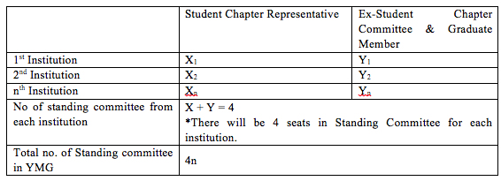

SECTION 9: STUDENT CHAPTERS
9.1 Description and General Information
Student chapters are group of students coming from tertiary educational institutions in Hong Kong that refer to YMG Committee for their assembling and daily operation.
Their relationship with YMG is exemplified by the following diagram:
9.2 Objectives
- Support the values and missions of EWB-HK
- Provide chapter leadership and maintain a healthy chapter operation.
- Raise awareness of development issues among members and volunteers, as well as to offer the opportunities to solve technical problems for the communities in need.
- Foster cultural understanding and awareness among students.
- Provide training to students to become internationally responsible engineer.
- Help disadvantaged communities meet their basic needs.
- Offer supports to the projects activities and operation of EWB-HK, i.e. supports means involvement in promotion, front line assistance etc.
- Actively participate in the activities and projects organized by EWB-HK and YMG
9.3 What does a Student Chapter do
- Attracts new members.
- The chapter provides a means for new students of all disciplines to help make a difference.
- EWB is open to engineering students and non-engineering students alike.
- Holds chapter meetings once a month or as necessary (individual project meetings will most likely meet several times per week).
- Provides training for other students.
- Finds and applies for projects via EWB-HK (see section 13 for details).
- Forms sub-committees to work on those projects.
9.4 How to start a Student Chapter
Before starting a chapter, it is necessary to have in place:
- A driven leader: This person can either be a faculty member or a student
- A few excited students: we recommend a minimum of 3 people for each chapter.
- Faculty support: We have found that having a faculty member, and/or the Dean behind the chapter, provides continuity and guarantees official support.
Once enough people are interested in starting a Student Chapter, the next step is to contact EWB-HK, namely the Young Member Group, which will operate as a reference for all Student Chapters.
EWB-HK will provide information on how to formally start the Chapter and will require each chapter to submit a formal Student Chapter Startup Form.
The Form should be submitted at the beginning of each school year.
9.5 Student Chapters Structure
Each student chapter must have at least an energetic leader who is willing to put enough time to make the Chapter successful. This leader is nominated President of the Chapter.
Each chapter must have a President. If other strong-willed individuals are willing to help the President managing the Chapter, they can be nominated Deputy Presidents of the Chapter.
Other officers may include a Secretary and a Treasurer, to the President discretion and based on the size of the Chapter. The only mandatory officer for each chapter is the President.
All officers remain in power for the entire student year and can be replaced for the next year, upon submission of a new Startup Form.
Representation of each Students Chapter is assured via a Standing Committee, which interacts directly with EWB-HK and includes representatives from all Student Chapters in Hong Kong.
The Standing Committee is formed by:
- Student Chapter Representatives
- Ex Student Chapter Representatives
- Graduate Volunteers
The seats on the committee are assigned as following:
Function of the student chapter representatives are as following:

Representatives have right of vote and both functional and mentoring duties and they report directly to the YMG Committee.